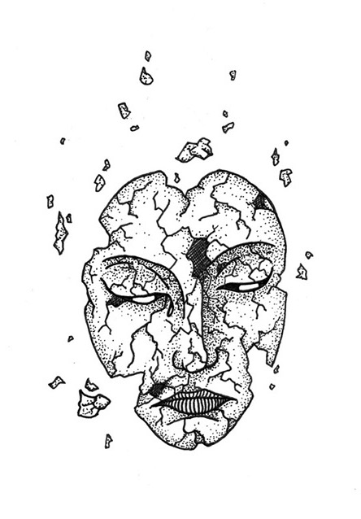
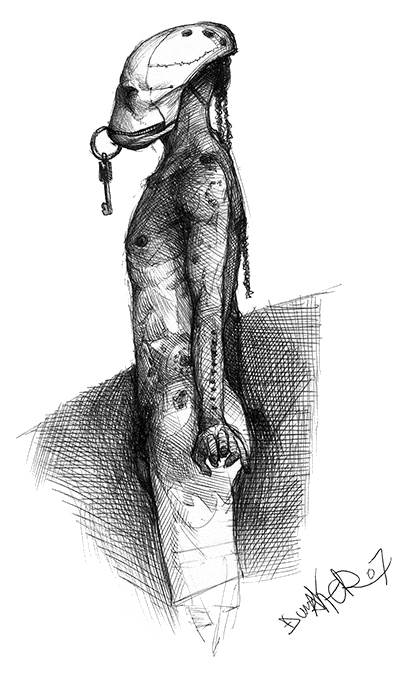
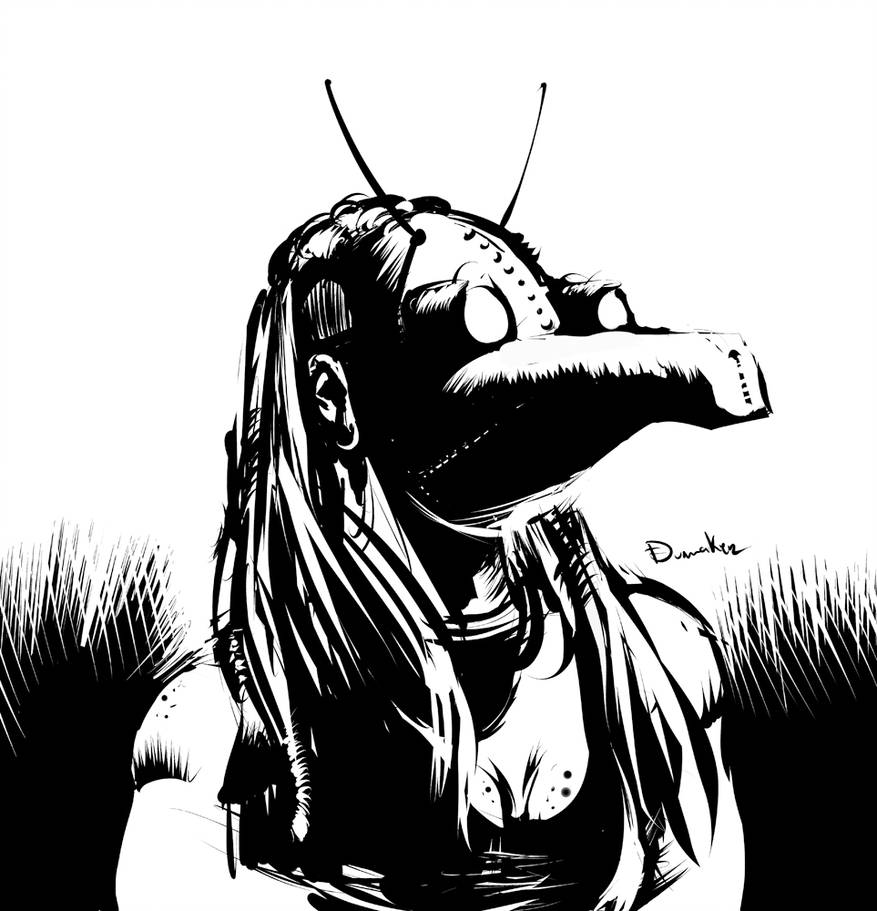
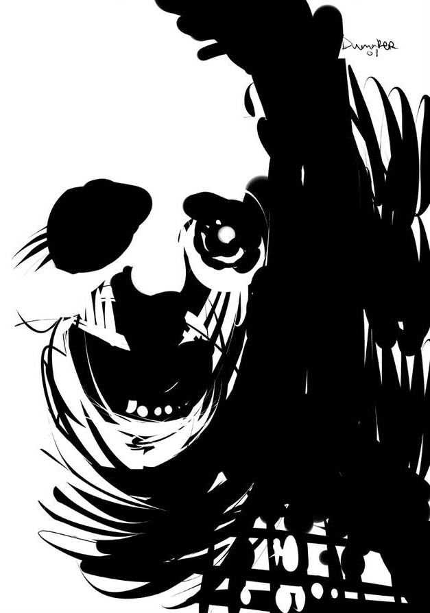
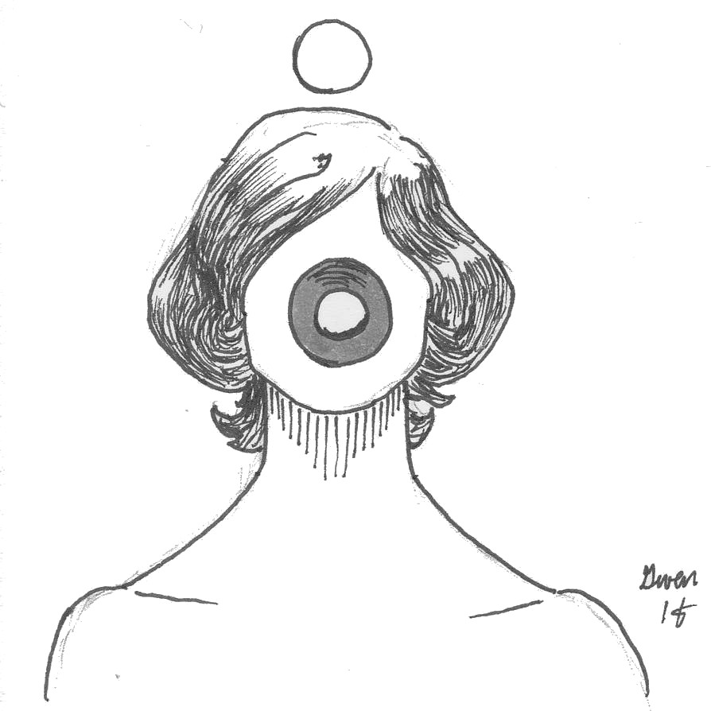
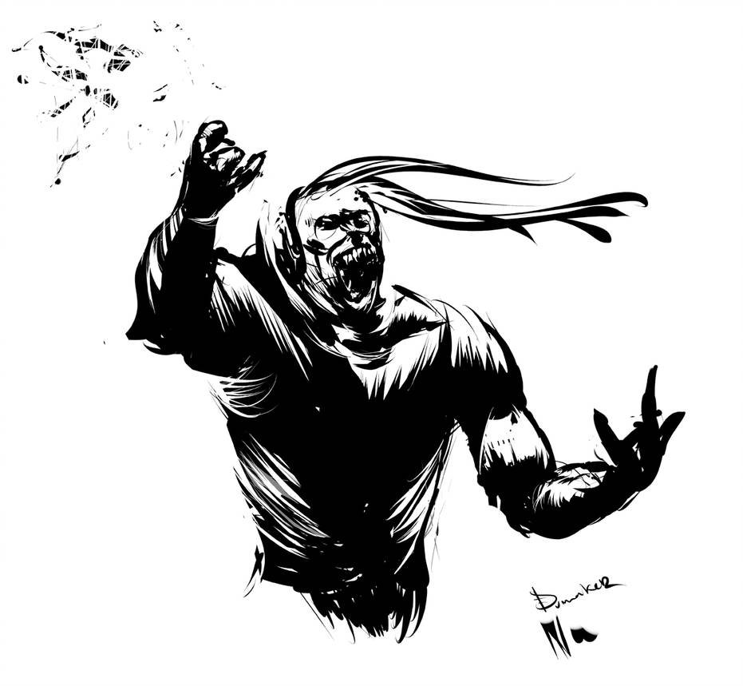
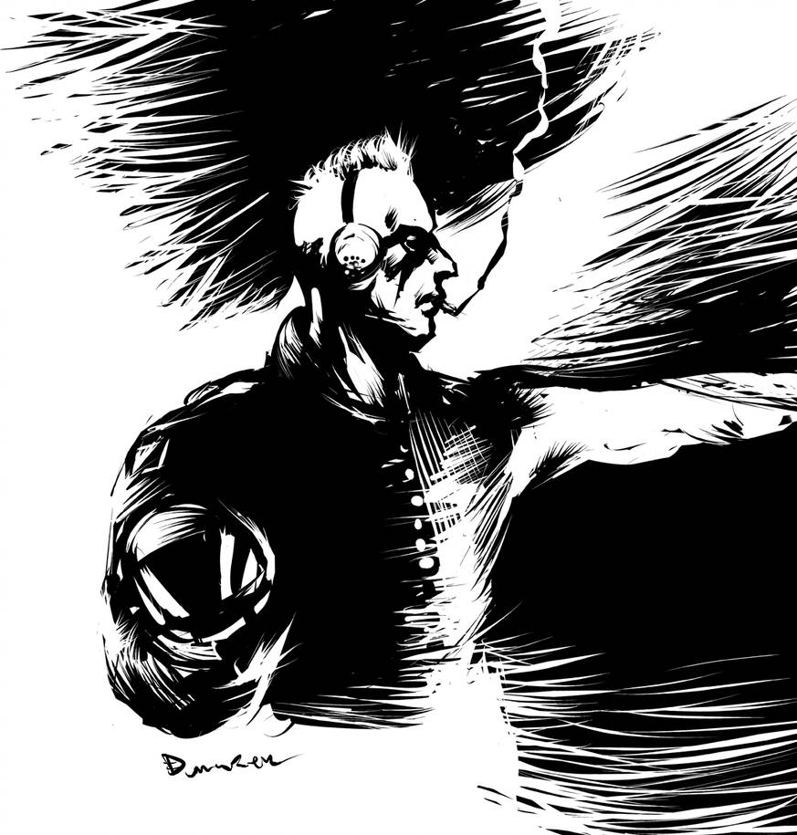
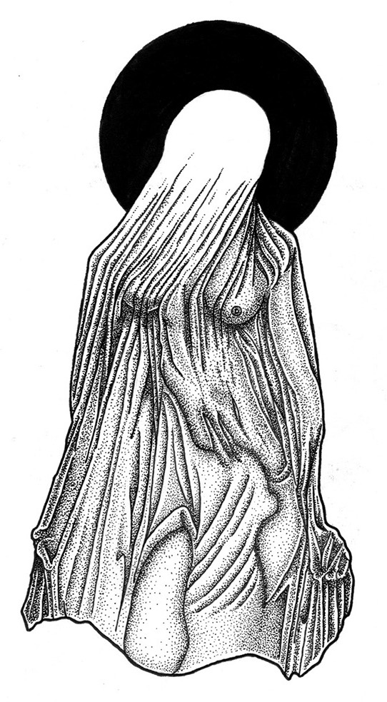

2200: le jugement des dieux
Il y a quelques instants encore, vous étiez vivant. Maitenant vous êtes assis dans une petite salle d’attente. Le Purgatoire, d’après l’inscription que vous distinguez à l’envers sur la porte vitrée. Vous attendez impatiement que le petit homme à la veste grise de l’accueil vous fasse signe d’entrer dans la pièce à côté. Là où se jouera votre après-vie.
Un jeu de rôle sans meneur pour 4 joueurs par Lucas Cimon. Il nécessite deux dés à 8 faces et quelques pions quelconques, par exemple des billes d’aquarium. Un sablier peut également être utile.
Synopsis
Vous allez chacun jouer un dieu, ancien ou moderne, ayant la charge de statuer du sort des mortels décédés en cette année 2200. Peut-être est-ce votre rôle depuis toujours ? Peut-être les dieux de la mort changent-ils avec les siècles ? Quoi qu’il en soit, vous avez vos propres critères pour juger des actions des hommes, de leur karma et de la valeur de leur âme.

Tour à tour, vous allez mettre de côté votre rôle divin pour incarner un mortel dont les actions seront passées au jugement par un panel de 3 dieux. Sa vie s’est déroulé au XXIIe siècle, dans le future de notre monde actuel, devenu légèrement cyberpunk et dystopique.
Dieux et deesses
Tirez au hasard quel est votre domaine, et quelle ligne de conduite vous jugez. Si l’un de vos résultats a déjà été obtenus par un autre joueur, choisissez ce qu’il vous plait. N’hésitez pas non plus à adopter un choix n’apparaisant pas dans ces listes.
Domaine divin
- L’argent et le pouvoir
- La volonté et le succès
- Les animaux et les plantes
- La connaissance et la technologie
- Les arts
- La guerre
- La justice et l’équité
- L’amour et le sexe
Ligne de conduite
- L’éthique
- Les relations humaines
- Ce qui a été produit
- La fidélité et les promesses
- La bravoure
- La renomée acquise
- Ce qui a inspiré ou fait rêver
- La politesse et les bonnes manières
Choisissez-vous ensuite un nom. N’hésitez pas à prendre celui d’un dieu connu, ou de choisir d’être simplement nommé par le titre de « dieu de votre domaine ». Décrivez enfin chacun votre apparence aux autres joueurs. Vous pouvez mentionner si vous êtes vénéré quelque part et/ou quels pouvoirs vous sont attribués.
N’oubliez pas votre stature de dieu durant toute la cérémonie du jugement : vous êtes au-dessus des Mortels et ils doivent s’adresser avec déférance envers vous.
Le tribunal
Lancez chacun un dé, et départagez les égalités. Du résultat le plus petit au plus élevé, répondez chacun à l’une de ces questions en détails :
- À quoi ressemble la salle du jugement ? S’agit-il d’un lieu très commun urbain ? Ou un palace ? Décrivez où se tiennent les dieux et le mortel.
- Du tribunal on aperçoit la « destination heureuse ». Est-ce à travers une porte, via un écran de TV, ou autrement ? Décrivez ce petit aperçu de Paradis.
- On aperçoit également « l’autre lieu », celui de la punition et du châtiment. Quel pièce ou lieu peut-on distinguer ? Est-ce désert ? Décrivez ce petit aperçu d’Enfer.
- Enfin, une vue aérienne d’une ville contemporaine est visible. Comment se nomme cette ville ? Décrivez-la.
Cet ordre de réponse aux questions déterminera également l’ordre de passage en jugement des joueurs.
Ce tribunal a un employé permanent : le Passeur, qui accueille les mortels dans le Purgatoire, puis les amène au tribunal et à leur destination finale.
Le Mortel
Ne créez votre Mortel que lorsque c’est votre tour d’être jugé. Pendant que vous le décrivez, les dieux peuvent préparer votre nécrologie.
Prénom
- Enki
- Alcide
- Jill
- Channon
- John
- Rose
- Julien
- Oona
Nom
- Bilal
- Nikopol
- Bioskop
- Yarrow
- Difool
- Walker
- Solédango
- Sarango
Réputation
- Manipulateur
- Violent
- Amoral
- Opportuniste
- Dépravé
- Fachiste
- Nihiliste
- Tamagochiste
Milieu d’origine
- Ouvrier dans l’industrie métalurgique ou les mines
- Bourgeoisie aisée des plus hauts gratte ciels
- Ghetto de cité flottante
- Hippie protecteur des dernières forêts
- Religieux boudhiste ou hindou
- Marin passeur de réfugiés climatiques
- Station spatiale
- Androïde ou transhumain
Domaine d’activité
- Élu parlementaire
- Homme de main d’une mafia
- Scientifique bani
- Astronaute
- Inspecteur de police
- Journaliste
- Militant subversif
- Prêtre d’un dieu oublié

Le jugement
Le joueur à la gauche du Mortel interprête le Passeur quelques instants. Il invite le Mortel à le suivre dans le tribunal, où il lui énonce les titres des dieux qui y siègent, puis l’introduit à l’assemblée.
Si vous disposez d’un sablier, mettez-le à la disposition des dieux : dès que l’un d’eux estime que le Mortel arrive au terme de son temps de parole, il peut renverser le sablier devant lui, puis l’interrompre lorsqu’il sera écoulé.
La necrologie
 Tour de table en commençant à gauche du Mortel- naissance et enfance
- faits marquants
- fin de vie et mort
Le plaidoyer
Le dieu en face du Mortel lui explique ce qui va se jouer ici, et l’invite à s’exprimer, à leur exposer pourquoi il mérite une après-vie heureuse.
Le Mortel a 5min pour parler librement. Il peut mentionner tout ce qu’il souhaite de sa vie passée.
Les accusations
Tour de table en commençant à gauche du Mortel.
Un événement où ses actions (ou son inaction) ont eu de graves conséquences. A-t-il été témoin / victime / commis un crime ? Quel choix a-t-il fait ?
Vous pouvez vous inspirer des événements de la table ci-dessous :
- le scandale des effets secondaires du Solivox de 2186
- les vagues de délation et d’expulsion pour crime de solidarité de 2191
- les 10 jours de black-out électronique de mai 2188
- la « dernière marée noire » de 2179
- l’épidémie de narcolepsie de 2176
- l’affaire du tueur en série virtuel de 2194
- le coup d’état corporatiste de 2183
- l’affaire du serial killer des mondes virtuels de 2194
- les psychotropes de synthèse procurant des capacités de précognition
- la révolte des androïdes mineurs de métaux rares de 2196
- la lutte pour les droits civiques des clones de 2192
- la seconde guerre froide du milieu du XXIIe siècle
- l’arrivée de réfugiés aliens en 2199
Pour tirez un événement au hasard dans cette table, lancez un d8 et reportez le résultat dedans, en sautant par-dessus ceux déjà utilisés dans la partie.
En tant que dieu omniscient, décrivez quel comportement du Mortel vous avez été témoin.

Le requisitoire
Le Mortel a 5-10min pour se défendre des accusations qui ont été formulées.

Le conciliabule
Les dieux décident de leur verdict en considérant les actions du Mortel vis à vis de leur domaine et de la ligne de conduite qui leur ait chère. Ils prennent l’ensemble des faits évoqués en considération : si la réponse du Mortel aux accusations des autres dieux plait à un dieu, libre a lui de le sauver.
Chaque dieu est souverain pour déterminer quelles actions il estime mériter châtiment vis à vis de son domaine, tant qu’il reste constant entre les jugements. Un dieu de l’argent peut tout à fait considérer qu’il s’agit d’une force corruptrice et que les plus nobles des Mortels sont ceux qui y résistent.
Les dieux peuvent échanger brièvement entre eux leurs points de vue.
Une fois leur décision prise, ils passent au vote : ils prennent chacun un des jetons au centre de la table. Ils le placent dans leur main droite pour sauver l’âme du Mortel, et dans la gauche sinon.
La prise a partie
Une fois la décision des dieux prise, le Mortel peut réclamer à un dieu en particulier d’accomplir un défi de son choix pour prouver sa valeur, ou bien lui demander de consulter l’audience du tribunal, ou encore d’écouter le témoignage d’un Mortel qu’il a aidé ou sauvé.
Le dieu pris à partie est libre de refuser. S’il accepte, à lui d’énoncer les termes du challenge.
Une fois celui-ci établit, chacun des deux autres dieux choisit un chiffre distinct entre 1 et 8. Puis le Mortel à son tour choisit 3 chiffres distincts et différents de ceux des dieux. Les 3 chiffres restant seront ceux du dieu pris à partie.
Le joueur incarnant le Mortel décrit alors comment il s’y prend pour relever le challenge.
Il lance ensuite un dé :
- s’il obtient un de ses chiffres, c’est une réussite ! Il « achète » le vote du dieu défié.
- sinon, le dieu correspondant est libre de changer son vote s’il le souhaite. De plus, si le vote final est négatif, ce dieu pourra imposera un châtiment supplémentaire.
La sentence
Les dieux révèlent simultanément leur main droite. Si au moins 2 jetons sont révélés, l’âme du Mortel est sauvée.
License et sources
 Ce jeu est sous license CC BY 4.0.
Ce jeu est sous license CC BY 4.0.
Si vous le testez, songez à me laisser un petit commentaire sur https://chezsoi.org/lucas/blog
Polices : HACKED par David Libeau.
Illustrations :
- deux dessins d’Elliot Jolivet aka Tenseï réalisés lors d’Inktober 2017
- untitled by auto-spiral - CC BY-NC-SA 3.0
- donde deje la llave, The gulls cyberpunk, Halloween Series 3, Furia, & Cyberpunk The Others de Dumaker
Inspirations : beaucoup de BDs (que vous pouvez vous amuser à retrouver à partir de la table de noms de Mortel) ainsi que les jeux de rôle Urban Armies et Le Dernier Café Sur la Droite.